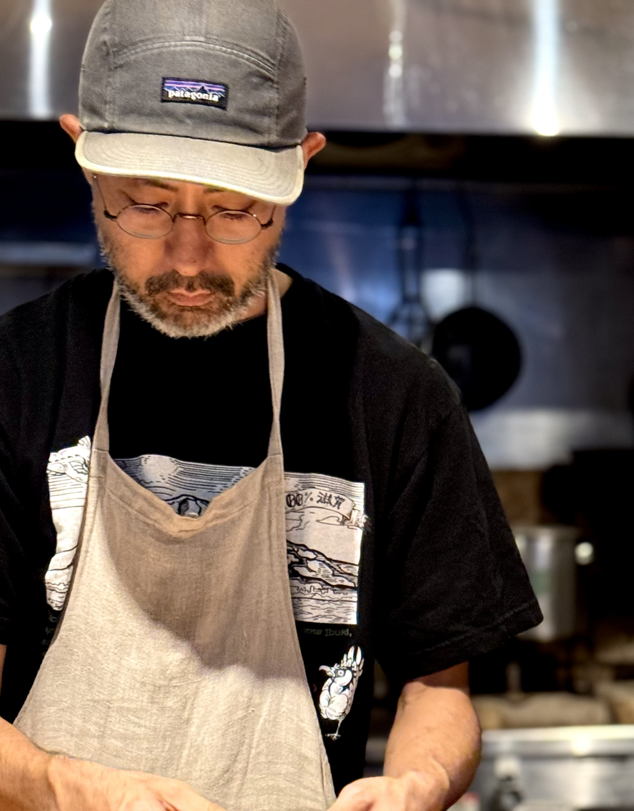
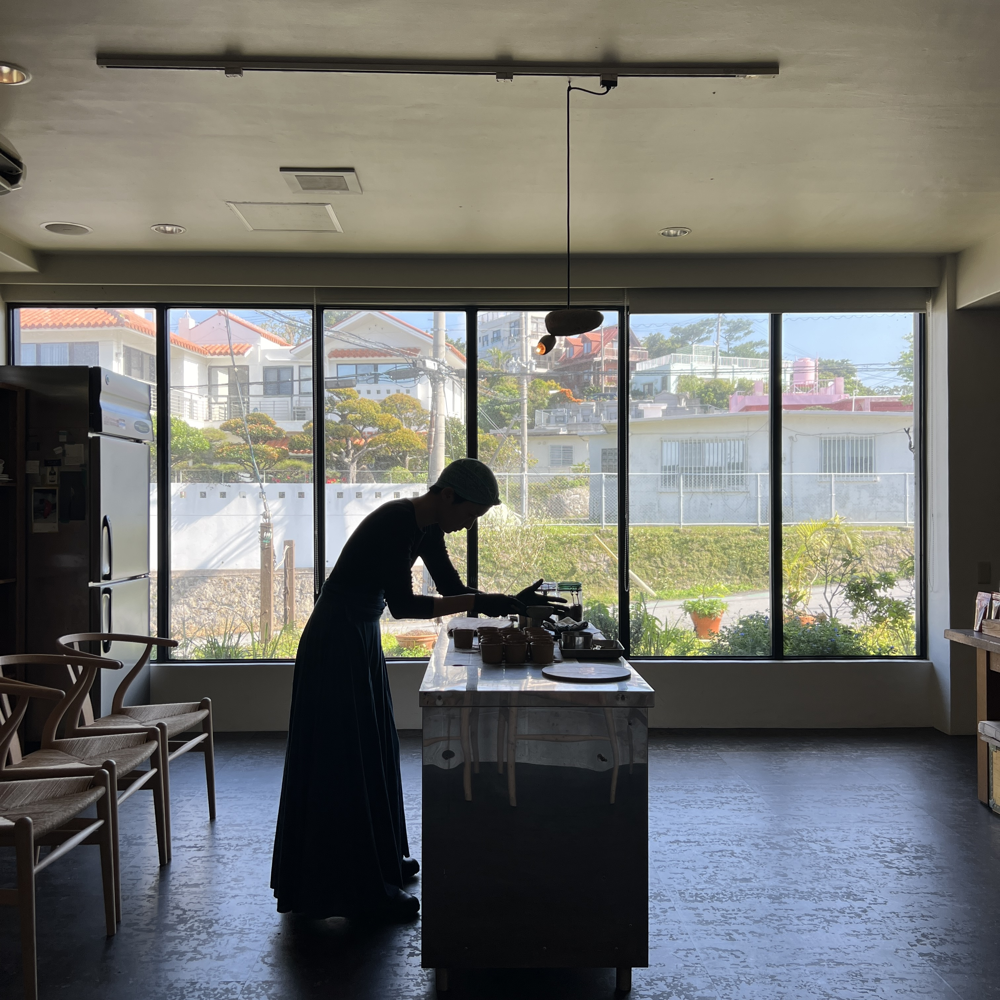

Story
つくり手のこと
Satoshi Shiohira
潮平 里志 ── オーナーシェフ
1984年、沖縄県うるま市生まれ。 調理専門学校卒業後、東京・銀座の名店「ラ・ベットラ」にて修業。 蒲田のイタリアン「un passo」で技術を磨いた後、単身イタリアへ渡る。
北イタリアとフィレンツェで約4年間、現地の厨房に立ちながら食と文化に深く向き合った。 ティラミス発祥の地トレヴィーゾで出会った、シンプルで力強い味わい。 その記憶が、のちのSottoの原点となる。
帰国後は沖縄・北谷で伝説的な支持を集めたレストラン「ARDOR」のシェフを務め、 2021年、コロナ禍の最中、妻とともにティラミス専門店Sottoを立ち上げる。 オープン直後から予約開始1分で完売が続き「幻のティラミス」として話題に。 翌2022年には姉妹店Totto（カウンターイタリアン）を開業。
「最高の状態でお届けしたい」という一心で、 毎週イタリアから届くマスカルポーネの状態を見極め、 仕込みのたびにレシピを微調整する。 同じ味を量産するのではなく、常にその瞬間の最善を届ける。 それが潮平の料理人としての信条です。
沖縄の風土と、イタリアで培った感覚。 そのふたつが静かに重なる場所が、Sottoです。


Chihiro Shiohira
潮平 ちひろ ── オーナー / ciromedia
1984年、沖縄県那覇市生まれ。 高校卒業後、心理学を学ぶため県内の大学へ進学。 その後、東京のアパレル企業に約6年間勤務し、 ファッション・インテリア・民芸の世界に触れる中で、 ものの背景にある「手ざわり」や「物語」への感覚を磨いた。
2014年、料理人である夫・里志とともにイタリアへ移住。 フィレンツェで2年、北イタリア・モンテベッルーナで2年半、 現地のオステリアで働きながら、イタリアの暮らしと食文化を肌で吸収した。
2018年に帰国、出産を経て、2021年に夫婦でSottoを立ち上げる。 店頭での接客を中心に担い、イタリアの蚤の市で集めた雑貨や 焼き菓子のセレクトなど、Sottoの「グロッサリー」の世界観をつくる存在。 お客様が手に取るもの、目にするもの、感じる空気── その一つひとつにちひろの審美眼が息づいています。
また、ブログ「ciromedia」では沖縄での暮らしや子育て、 日々の気づきを綴り、Sottoの空気感を言葉でも届けている。